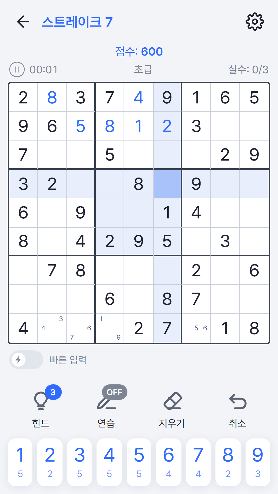
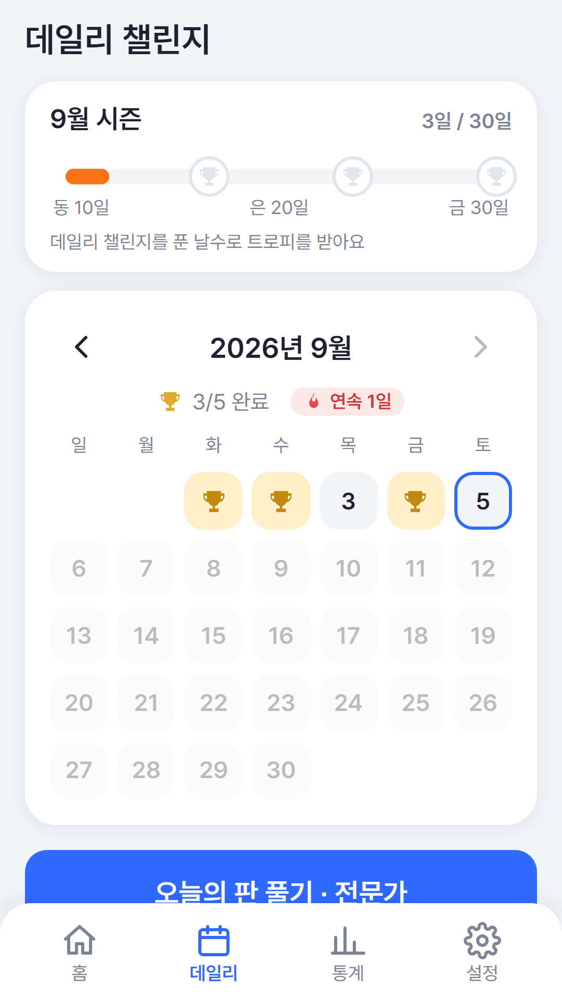
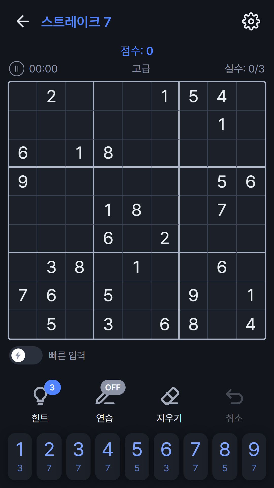

메모
한 칸에 후보 숫자를 여러 개 적어 둘 수 있습니다. 종이에 연필로 작게 적던 그것입니다.
가로줄·세로줄·3×3 상자마다 1부터 9까지 한 번씩. 빈 칸에 들어갈 수 있는 숫자는 언제나 하나뿐이고, 그걸 찾아내는 것이 전부입니다. 찍어서 맞히는 판은 하나도 넣지 않았습니다.
모든 판은 답이 하나뿐이고, 논리만으로 끝까지 풀립니다.
난이도가 여섯 단계입니다. 빠름은 힌트로 채워진 칸이 많아 손이 계속 움직이고, 익스트림은 한 수를 놓는 데 한참을 들여다보게 됩니다. 같은 규칙인데 전혀 다른 게임처럼 느껴집니다.
밝게와 어둡게를 모두 지원하고, 기기 설정을 따라갑니다.



한 칸에 후보 숫자를 여러 개 적어 둘 수 있습니다. 종이에 연필로 작게 적던 그것입니다.
숫자를 먼저 고르고 칸을 누릅니다. 같은 숫자를 여러 칸에 넣을 때 훨씬 빠릅니다.
날마다 판이 하나씩 열립니다. 한 달 동안 며칠을 채웠는지에 따라 동·은·금 트로피가 남습니다.
판을 풀면 코인이 쌓입니다. 판 색을 바꾸는 테마 다섯 가지, 보호막, 힌트 묶음으로 씁니다.
지금 판의 코드를 보내면 상대가 똑같은 판을 엽니다. 누가 더 빨리 푸는지 겨뤄 볼 수 있습니다.
한국어·영어·일본어·중국어(간체·번체)를 지원하고 기기 언어를 따라갑니다.
브라우저에서는 설치도 로그인도 없이 바로 시작합니다. 폰에 두고 쓰고 싶으면 Google Play에서, 토스를 쓰신다면 미니앱으로도 있습니다.